| 日付 | 2012年5月31日（木） |
|---|---|
| 山域 | 丹沢 |
| メンバー | 単独 |
| 山行形態 | 日帰り |
| アクセス | 車 |
| ルート (Map) | 土山峠 (10:03) - (10:43) 辺室山 - (11:06) 物見峠分岐点 - (11:42) 鍋嵐 - (12:08) 熊ノ爪 - (13:18) P617m - (13:38) P525m - (14:19) ユーレイ橋 - (14:51) 土山峠 |
休暇が取れたので、久々に単独で山に行くことにする。
せっかくなので、一人でしか行けない山に行きたい。
しかし、天気が悪いので遠出する気にはなれず、丹沢の地図を眺めてみる。
目を引いたのは鍋嵐という名前のピーク。
宮ヶ瀬湖の南にあるピークで、登山道はないが顕著なピークだ。
ネットで検索すると北の方に伸びる宮ヶ瀬尾根も
バリエーションルートとして楽しめそうなところのようだ。
さらに、宮ヶ瀬湖畔にあるというユーレイ橋が気になったので、
土山峠から辺室山経由で鍋嵐に登り、宮ヶ瀬尾根を下ってユーレイ橋に下りつき、
湖岸を歩いて土山峠に戻るというルートの計画を立てる。
子供を保育園に預けて土山峠に向かう。ここには車を2台停めるスペースがある。
遅い時間の到着だが、平日ということもあり幸い1台しか車が停まっていなかった。標高300m。
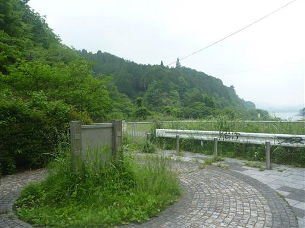
すぐ傍に辺室山登山道入口がある。
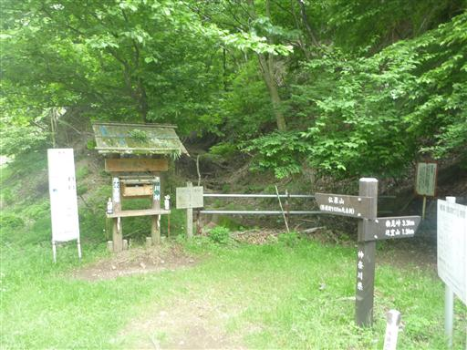
ヤマビル注意の看板。この辺りはヤマビルの多い地域で、この季節はまさにヤマビルが出てくる季節。
藪があるかもしれないルートを歩く予定なので、かなり不安だ。
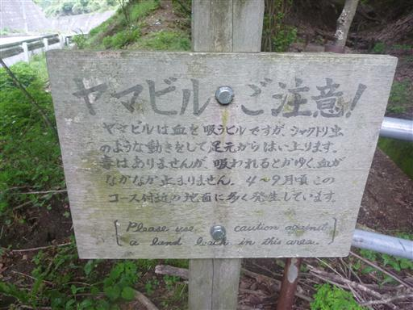
標高の低い山なので植林地帯が多いかと思ったら、案外そうでもない。
立派な木がたくさんあり、足元にはいくつかの祠が見られる。
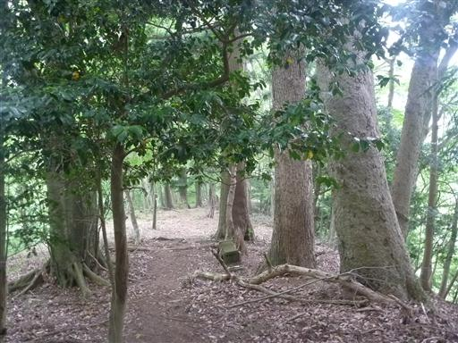
山頂付近に近づくと傾斜が緩んで広々とした斜面になる。
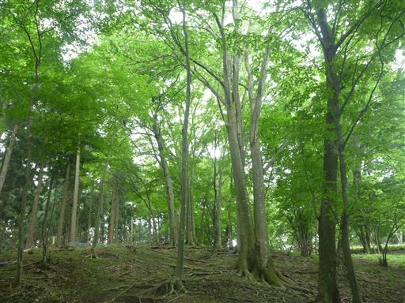
辺室山山頂に到着。標高644m。
テーブルが1つあるだけで、展望は全くないピークだ。
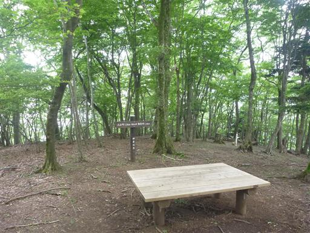
ヤマツツジの花が咲いている。
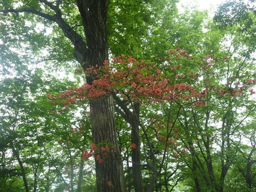
木の向こう側にこれから辿る予定の宮ヶ瀬尾根が見えている。
あちらの尾根も濃い緑色に覆われている。
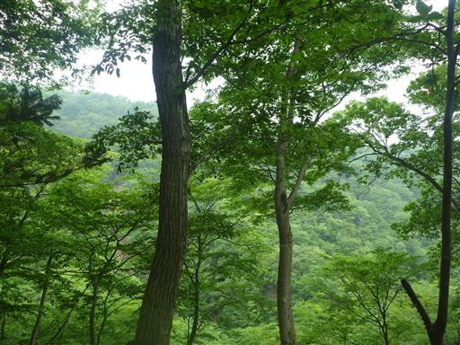
足元に蛇を発見。道のど真ん中にいる。
近づいてみたがあまり動こうとしない。
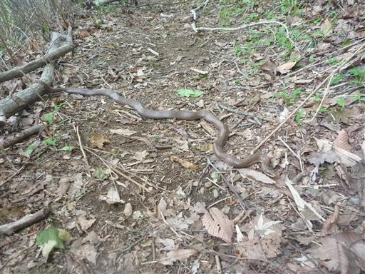
物見峠の手前の分岐点に到着。正規の登山道はここまで。
ここから登山道を外れて鍋嵐に向かう尾根に入っていく。
明らかな踏み跡があるため、間違えないように標識が立てられている。
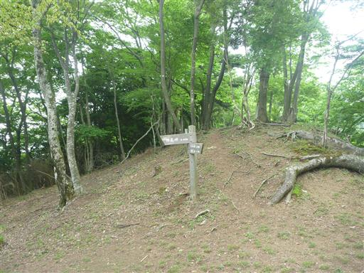
鍋嵐に向かう尾根を進むとすぐに、注意書きの標識が出ている。
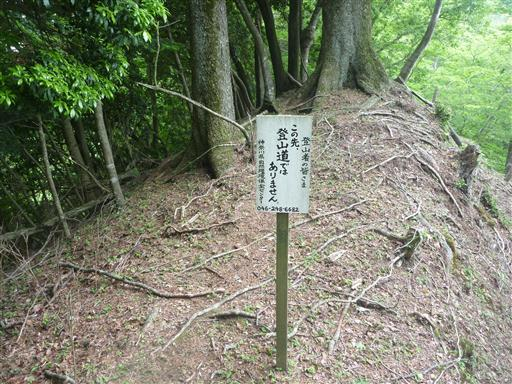
木の間から少しだけ展望が開ける。
足元に見える谷は堤川、背後の山は仏果山のあたりだろうか？
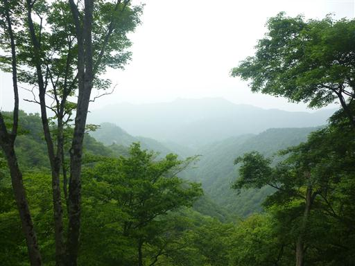
なんとロープが用意されている。なかなか整備が行き届いているようだ。
もっとも、ロープが無くてもなんの問題もない場所なのだが…
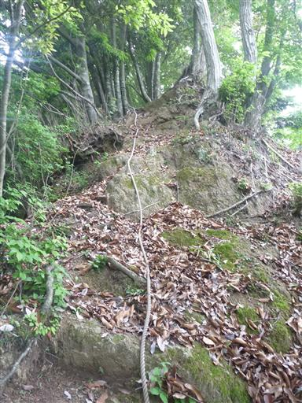
思った以上に踏み跡ははっきりしている。藪がなく非常に歩きやすい。
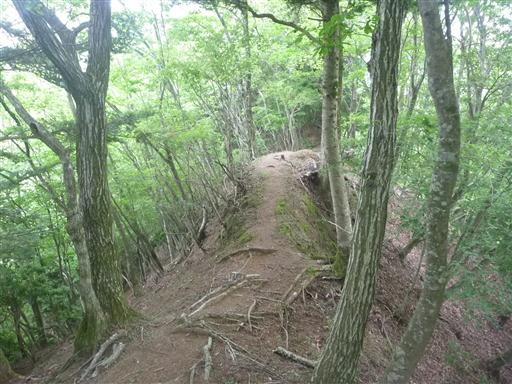
719mピークから鍋嵐に向かう方向に踏み跡がなかったため不思議に思っていたら、
途中で明瞭な踏み跡と合流する。どうやら719mピークを巻く道があったようだ。
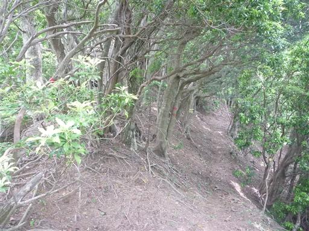
細い尾根の真中で、巨木が行く手を阻んでいる。
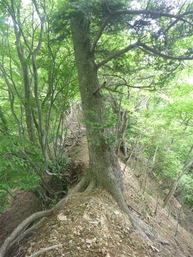
山頂直下は急登になる。本日の山行で唯一の登りらしい登りだ。
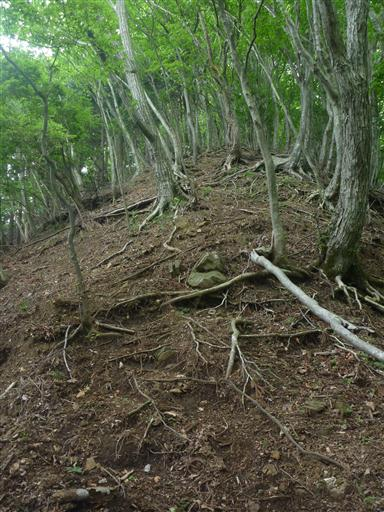
鍋嵐山頂に到着。標高817m。
標識によると「ナベワラシ」と読むようだ。
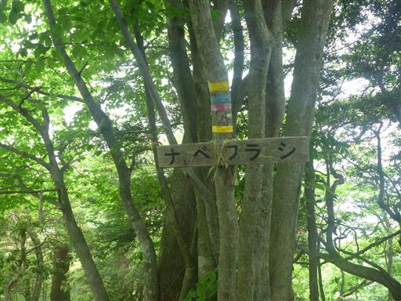
山頂は狭い。当然展望はない。
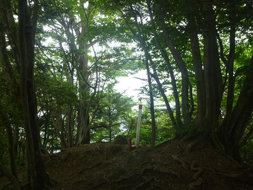
鍋嵐からはしばらく来た道を引き返す。
帰りは先ほど見つけた巻き道を歩くことにする。
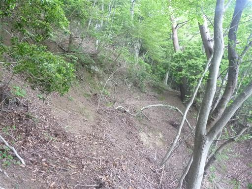
再び尾根に合流する。巻き道と719mピークに向かう道との分岐点だ。
行きはこの巻き道に気が付かずにまっすぐ行ってしまった。
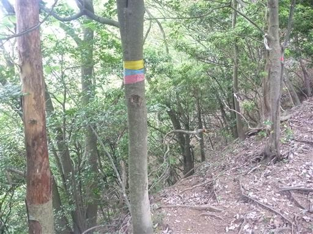
よく見ると、きちんと案内が記載されている。
巻き道は現在地点が把握しづらくなるので、個人的にはあまり好きではないのだが…
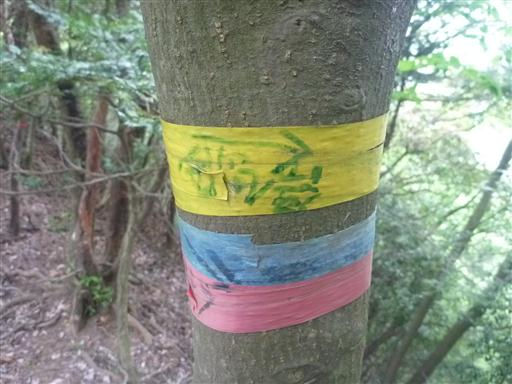
熊ノ爪と呼ばれるピークまで引き返す。
ここからは来た道と分かれ宮ヶ瀬尾根を北上する。
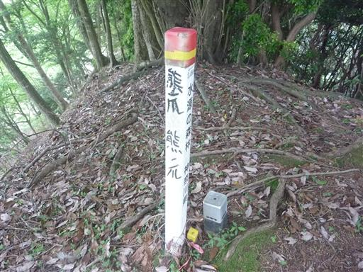
尾根の右側には金網が張られている。
この尾根は登山者の他に作業者も歩いてそうだ。
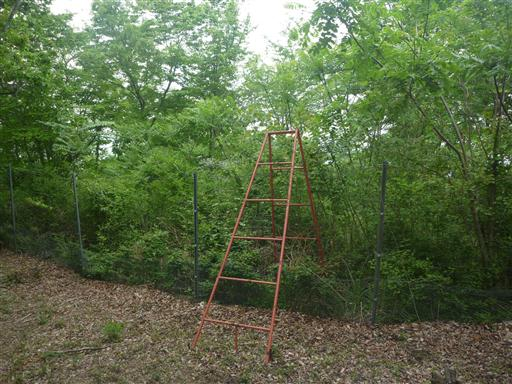
「右へ」の落書き。
この分岐点は確かに分かりにくいところだが、答えを書いてしまっては地図読みの練習にならない。
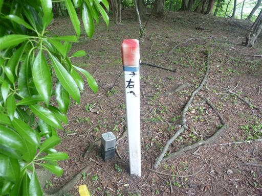
珍しい形の木を発見。フォークの木と命名。
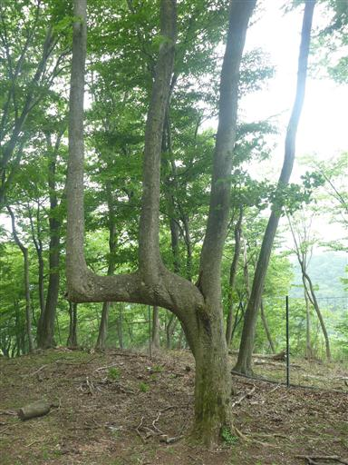
歩きやすい尾根を淡々と下って行く。

右手には相変わらず金網が見える。そして、金網に囲まれた部分は猛烈な藪。
シカの食害調査でも行っているのだろうか？
もしそうだとすれば、この歩きやすい尾根はシカさんのおかげということか。
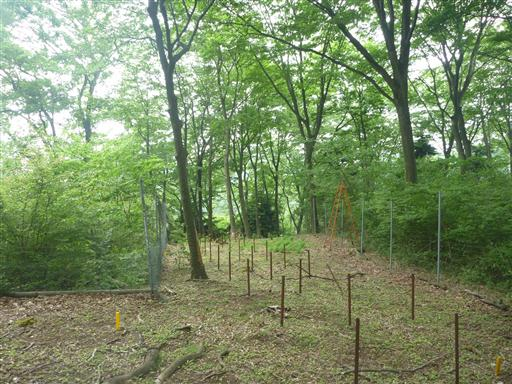
水源の森の標識。登山道でないようなところにも、このような標識は存在する。
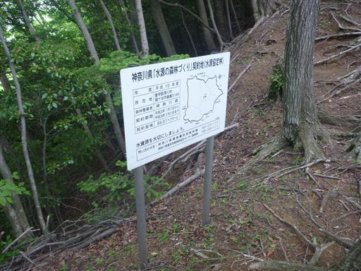
木の根が露出している。木の根の露出は「登山者の踏み付けが～」と説明されることが多いが、
人がほとんど歩かない場所でも、このような現象は発生するようだ。
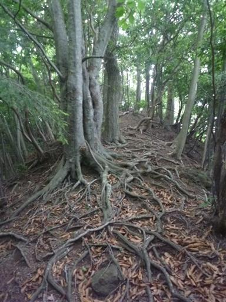
同心円状の不思議な石が埋まっている。
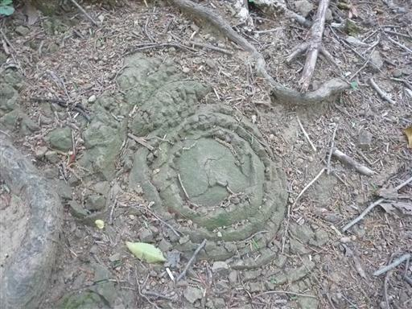
宮ヶ瀬尾根の北上を続けると、あたりは植林地帯になる。枝が散乱していて歩きにくい。
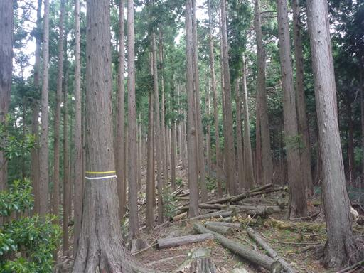
ここにも金網が張られている。金網が木にめり込んでいる。
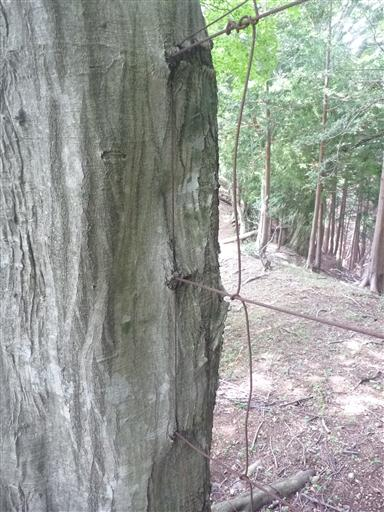
617mピークに到着する。
ここから土山峠に下ることもできるが、まだ時間に余裕があるため、もう少し北上することにする。
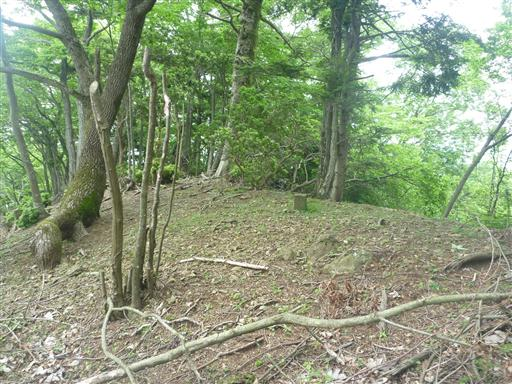
このピークには腰を掛けるのにちょうど良い木がある。
多くの人が腰かけるのか、木は若干禿げている。ここに座って5分ほど休憩。
幸い、ここまでヤマビルの気配はない。
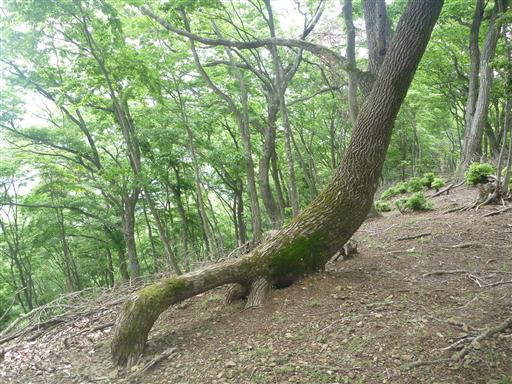
眼下には宮ヶ瀬湖がわずかながら見えている。
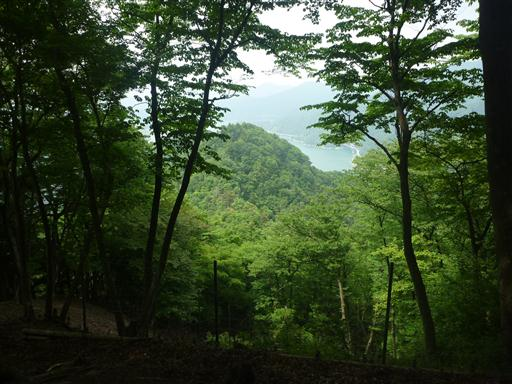
宮ヶ瀬尾根の主要なピークを過ぎ、踏み跡は少し細くなる。
それでも歩く尾根さえ間違えなければ問題はない。
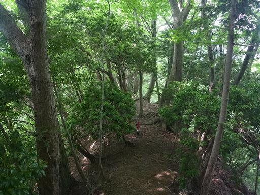
525mピーク手前は痩せ尾根で少しザレている。
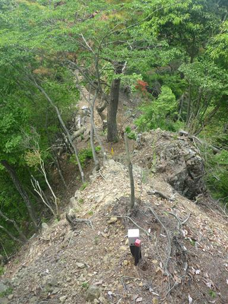
525mピークに到着する。
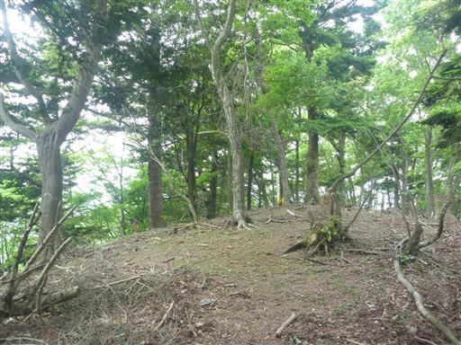
尾根はここから先も宮ヶ瀬湖に沈むまで続いている。
今回はここから宮ヶ瀬尾根を離れて、北東に延びる支尾根を下る。
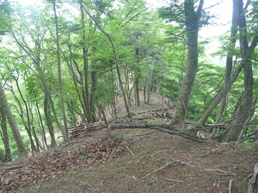
なんと、この場所には立派な標識が存在する。
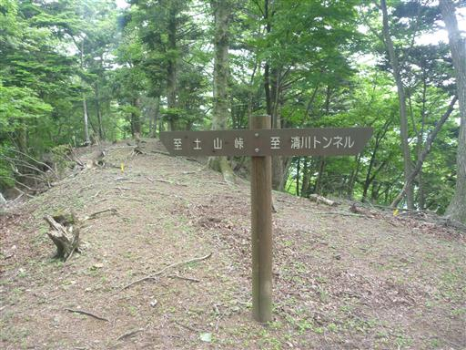
登山道の無いところになぜ標識があるのかと思っていたら、
なんとはっきりした登山道まで存在する。
こんなところに地図に載っていない道があるとは知らなかった。
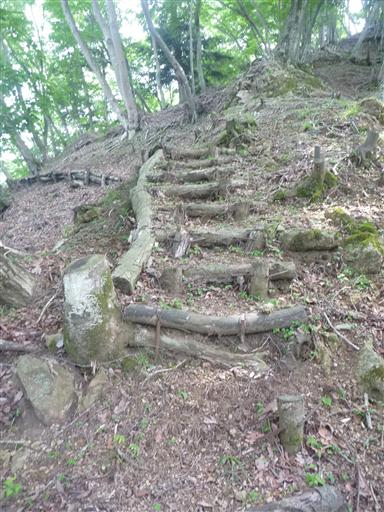
430～440mピークに到着する。登山道はこのピークを巻いて、北東に延びる尾根を下っていく。
こちらの目標は北に伸びる尾根の先にあるので、ここで登山道とは分かれる。
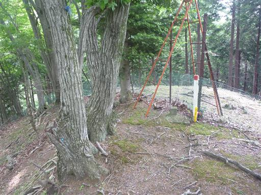
この尾根はもはや全く踏み跡がない。
通行を妨害する藪、左は有刺鉄線、尾根を外れると結構な急傾斜で歩きにくい。
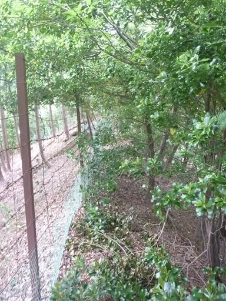
尾根が緩くなって歩きやすくなってきたころ、眼下に橋が見えてくる。
狙い通り、目指していたユーレイ橋に到着する。
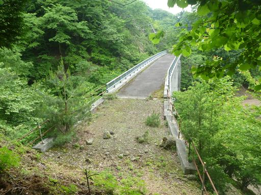
橋の先は尾根で、ここから先は道が付いていない。
宮ヶ瀬湖南岸に道路をつけようとしたが途中で開発はストップし、この橋は取り残されてしまった。
そのため、この橋は一度も車が通ったことがない。
宮ヶ瀬尾根の向こう側には、同じく車が一台も通った事が無い清川トンネルが存在する。
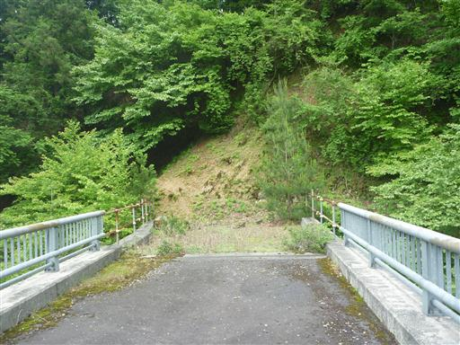
橋から宮ヶ瀬湖を望む。
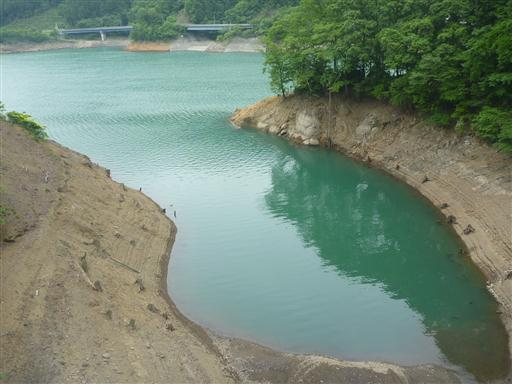
橋を渡った先にジャケツイバラの花が咲いている。
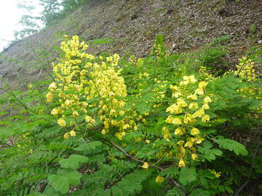
ここから土山峠に帰る方法が問題だ。ユーレイ橋から先は道が付いていない。
しかたがないので、湖岸の急斜面をトラバースして土山峠に向かう。
微かに踏み跡はあるような気がするが、かなり辛い。
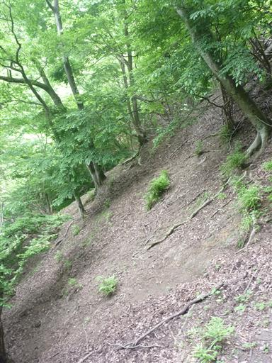
眼下には宮ヶ瀬湖。絶対に滑り落ちたくないところだ。
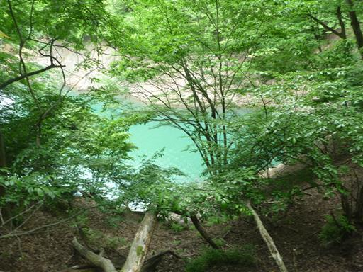
苦戦しつつ先に進むと、登山道が現れる。
下山時に分かれた登山道の続きに違いない。
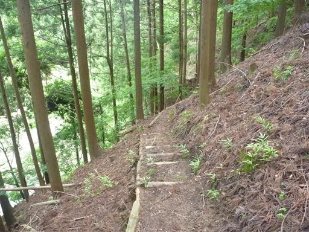
道があるというのは、なんと歩きやすいことか。
沢を渡るところにも橋が架かっていて至れり尽くせりだ。
沢は宮ヶ瀬湖の入り江に注いでいる。
ダム湖の水に触れる貴重なスポットなのだが、どうも近づく気になれない。
しばらく登山道を歩くと、車道に到着する。ここも作りかけで放棄された道の続きだ。
車道はちょうどこの場所で終わっている。
後はこの道を土山峠まで歩くのみ。
宮ヶ瀬湖の対岸には立派な車道が付いている。
切通しの中を歩いていく。こちらもなかなか立派な道路だ。

湖のほとりにニシキウツギの花が咲いている。
湖に沈んでいく昔の道が見えている。
土山峠に到着。
今回はあまり時間がなかったこともあり、じっくりと地図読みを行うことができなかったが
久々のバリエーションコースを楽しめた。